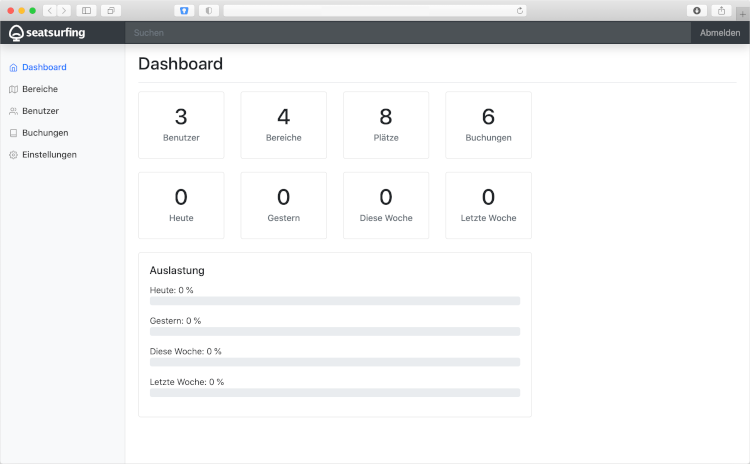

Administration UI
You can access the adminisatration web interface using a modern web browser by visiting your Seatsurfing's instance backend:
To log in to the administrator interface, your user must be equipped with org admin permissions.
After logging in, you'll see a web interface like this:

At the left, you can navigate to the various areas of the administrator interface.
At the head, you can quickly search for objects (such as users, locations, spaces). Right beside the search bar, you can log out.
The main area views the functionality you've selected. Right after logging in, the main area shows current statistics in a dashboard.
Dashboard
The dashboard shows current statistics for your Seatsurfing organisation. The statistics and numbers are intended to support you in review usage and user acceptance. Furthermore, Seatsurfing calculates space utilization in real time. This way you can always keep an eye on supply and demand.
The top of the dashboard shows information regarding the number of users, locations and spaces as well as the total mumber of bookings.
Below that, you can see current booking numbers of today, yesterday, the current week and the previous week.
The bar charts visualize the utilization of your spaces.
Areas
An area in Seatsurfing is anything that has a ground plan. This can be a single floor on a building. In this area you can manage spaces. A space is something a user can book – depending on your concept, it can be a seat, a desk or an entire room.
In the "Areas" section you can manage your areas and the spaces within them.
In order to manage spaces in an area, you have to upload a floor plan in JPEG, PNG or GIF format. Make sure your floor plan has an appropriate format and resolution. If the resolution is too high, your employees need to scroll a lot and may lose the plot.
You can place spaces via drag & drop. Keep the left mouse button pressed to move a space around. To change a space's size, click the lower right corner of a space. To name a space, click on the space's label and enter the new name.
Don't forget to save your changes afterwards.
Users
In the "Users" section you can manage your employees which have access to your Seatsurfing organisation.
Depending on your configuration in the Settings (see below), your employees can log in to Seatsurfing when successfully authenticated against your corporation's user directory service. This way, there's no need to administer all Seatsurfing users manually. When logging in for the first time, a Seatsurfing user account is created automatically.
To create or modify users manually, click the "Add" button or click a user from the list. You can set the username (using the user's email address) and his password. Setting a password is only necessary if your user is not authenticating using a linked authentication provider.
Additionally, you can flag certain users as organisation administrators. Administrators have full access to Seatsurfing's administrator web-interface. Thus, administrators should have long, secure and complex passwords.
Bookings
In the "Bookings" section you can view the bookings of your emloyees in a certain period.
You can choose the period to be shown in the area at the top.
Adding or changing bookings through administrators is not possible.
Settings
In the "Settings" section you can configure settings which apply to your entire Seatsurfing organisation.
Common settings
Allow login of all authenticatable users: When enabled, users can authenticate using an associated auth provider (see below) without having to be managed in Seatsurfing's internal user directory beforehand. A user account in Seatsurfing's database will be created upon first successful authentication.
Max. bookings per user: Limits the number of upcoming bookings per user.
Max. concurrent bookings per user: Determines how many concurrent bookings each user may have.
Max. days in advance: Specifies how many days in advance a booking can be placed.
Don't restrict admins (bookings per user, duration, in advance): If this flag is set all admins (FloorPlan/Org/Super) are allowed to book limitless, except the max-bookings-per-area limitation.
Allow bookings on a daily basis only: When enabled, users can book spaces for entire days only and do not need to enter enter and leave times.
Max. booking duration: Limits the duration of a single bookings.
Show bookers' names: Reveal the names of other bookers when booking a space. You should mind the privacy.
Confluence Shared Secret: A shared secret which is required for signing messages when using Seatsurfing's Confluence App.
Domains: A list of domains which can be used your user's email addresses. If not a global administrator, adding a domain requires an ownership verification. This requires access to your domain's DNS server as a TXT record needs to be added.
Auth Providers
Auth providers are services taking care of authenticating your users using standardised, secure protocols. Seatsurfing currently supports the OAuth 2 protocol.
By adding an auth provider, you can validate your Seatsurfing logins using your company's internal user directory. The passwords (or other identification criteria) entered by your users are not transferred to Seatsurfing when using an auth provider.
To add an auth provider, click the Add button at the upper right. Depending on the type of your auth provider, various different technical information are needed. Please ask your auth provider's technical administrator for these information. You can also use the templates prepared at the bottom of the dialog.
Auth providers can be used in addition to password authentication. When logging in, Seatsurfing checks if the requested user already exists in Seatsurfing's internal user directory. If he does exist and password authentication is enabled, the user will be prompted for her password. If it does not exists or has no password set, she can log in using one of the configured auth providers.
Danger zone
Use this section to delete your Seatsurfing organisation. The deletion is performed irrevocably. All data associated with your Seatsurfing organisation will be deleted and can not be restored. You should only use this functionality if you're absolutely sure about what you're doing.
Search
The search box at the top of the administator web-interface can be used by entering a keyword and pressing the enter key.
Search includes your users' email addresses (usernames) as well as the names of areas and spaces.